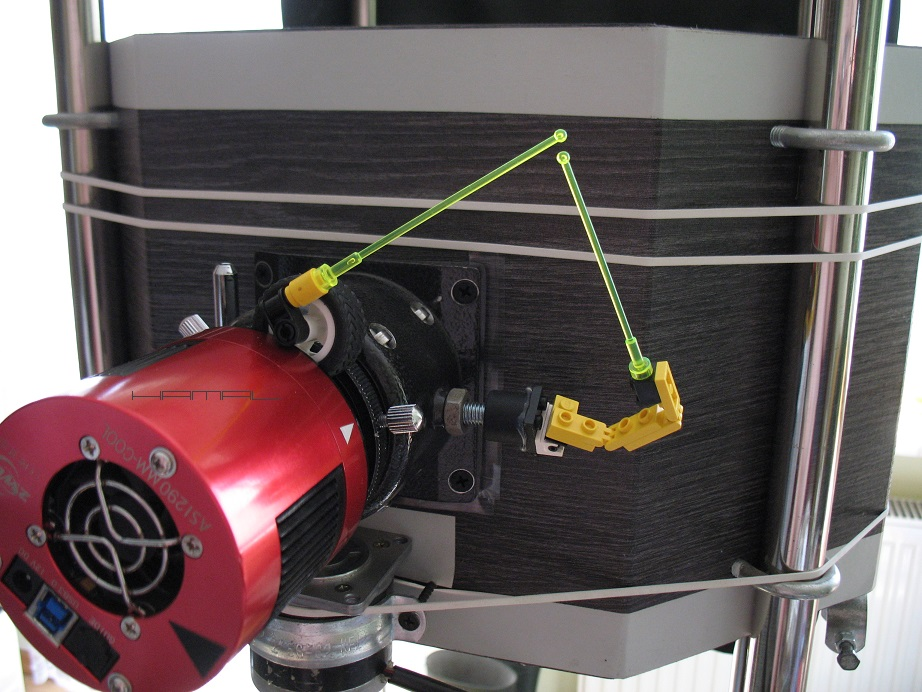
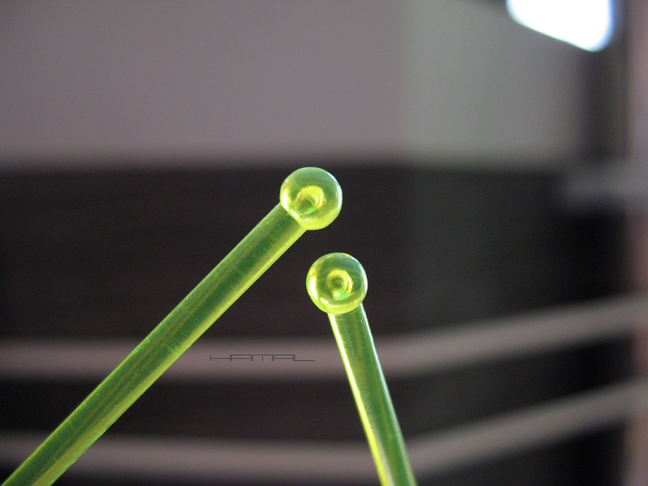

Sposób na szybkie i precyzyjne ręczne ustawianie
.
rotacji kadru w czasie sesji astrofotograficznej
|
Premiera opracowania nastąpiła dnia 17-10-2020 r. w TYM temacie. OPIS . Bywa tak, że w czasie sesji astrofotograficznej, zachodzi konieczność dokonania ustawienia pożądanej rotacji kadru, najczęściej dlatego, że łapiąc dany obiekt przez kolejne noce, chętnie zachowamy identyczną rotację kadru, aby przy stackowaniu nie tracić detalu przy obracaniu przez program wsadu o 2 stopnie. Jeśli nie posiadamy sterowanego pilotem rotatora, jesteśmy zmuszeni uczynić to ręcznie. Wyzwanie stanowi chwila przy wyciągu okularowym, moment, gdy poluzujemy kamerkę i potrzebujemy obrócić ją o odrobinkę. Nie jest łatwo wyczuć, czy ruch, który wykonaliśmy, to było dużo, czy mało, czy może wykonując ruch o grubość włosa, nie wykonaliśmy tak naprawdę żadnego ruchu, lub, czy przy zakleszczaniu obróconej tyci kamerki, nie cofnęliśmy zaciskiem tego, co dokonaliśmy. Taka zabawa w latanie między kamerką a monitorem może trwać w najlepsze, a efekty poczynań mogą być marne. Wykonując astrofotografię Lucki Imaging bardzo często dokonuję akwizycji poszczególnych sesji w kolejne noce, potrzebując identycznej rotacji kadru, i widząc, jakie uciążliwości wiążą się z jego ustawianiem, postanowiłem wykombinować jakąś przystawkę pozwalającą na lepsze i szybsze działanie. Uznałem, że potrzebne mi coś, co obsłuży każdą rotację, w każdym wysuwie wyciągu (dalekim i bliskim) i najlepiej, aby nie wisiało na stałe przy sprzęcie, bo potrzebne jest sporadycznie. Uznałem, że odpadają jakieś skale stopni na tulejach wyciągu i kamerki, z uwagi na bardzo małą precyzję takiego rozwiązania, a dodatkowo konieczność pracy na różnych wysuwach wyciągu okularowego. Stwierdziłem, że musi to być coś o dłuższym ramieniu, aby każdy drobny obrót kamerki był odzwierciedlany w sposób spotęgowany i jednoznaczny do odczytania. Podumałem, pofilozofowałem... no i wyszło... co widać poniżej. CARK znaczy się :] UŻYCIE Kiedyś... . Widząc, że brakuje nam tyci obrotu kadru, idąc do wyciągu, luzując kamerkę, miiiiniiiimalnie na oko ją obracając, po powrocie stwierdzaliśmy, że mamy nadal tą samą rotację! No to dawaj, do wyciągu, luzowanie... oooostrożne obrócenie o włos... wracamy... a tu nadal to samo! Hmm... pewnie moment klinowania cofa to co obracamy. No to daaawwaj... do wyciągu... obracamy tyyyci więcej... wracamy... i... przestrzeliliśmy! Pfff... Do wyciągu..... Ale można inaczej... Dziś... . Patrzymy na monitorze, jak dużo nam brakuje do idealnej rotacji, udajemy się do kamerki, instalujemy przystawkę kamerkową do kamerki, a ruchome ramię umocowane do wyciągu, zbliżamy kuleczką do kuleczki ramienia przykamerkowego. Kuleczki ustawiamy tak, aby szczelina między nimi miała np. 2mm. Luzujemy zacisk kamerki, zmniejszamy szczelinkę między kulkami do 1mm, zakręcamy zacisk kamerki, i... odkrywamy, że zacisk wrócił nas do punktu wyjścia! Ale spokojnie, my to widzimy, nie daliśmy się oszukać! Znowu luzujemy zacisk kamerki, dajemy nadmiar odległości między kulkami, aby uwzględnić to, co cofnie zacisk, zaciskamy zacisk kamerki, i z 2mm zrobiło nam się 1mm. Mamy wszystko pod kontrolą, jesteśmy zadowoleni. Wracamy do ekranu komputera, stwierdzamy, że jest do nadal tyci za mało. Wracamy więc spokojnie do kamerki, zmniejszamy szczelinkę między kulkami z 1mm do 0,5mm, wracamy do komputera, i stwierdzamy, że mamy idealną rotację co do pixela! Zadanie zostało wykonane w dwóch ruchach, a nie po dziesięciu minutach bawienia się w ciuciubabkę :) Ramiona CARK możecie wykonać z drucików, wydrukować przegubowe na drukarce 3D, lub moim wzorem, poskładać z LEGO, byle spełniały przywołane tu zadanie :)   
|